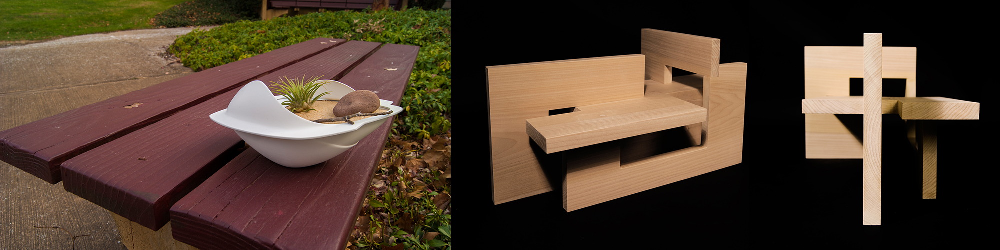

Form Studies
A content-specific styrene vessel & a 4-board wooden footstool

ROTOFORM
Given a plant, a stone, and stick, I designed a vessel that served as a cohesive environment for the items by incorporating elements from the items themselves. I arrived at my final form through many sketches and rapid prototyping. The process of translating 2D drawings to 3D form improved my visual communication abilities as well as the composition of my rotoform. While creating my design, I drew inspiration from the edge-to-curve transitions of the stick, the petal like structures on the plant, and the curvatures of the stone.
Design
FOOT STOOL
The process of crafting the four board foot stool was an exploration of composition, negative space, stability, and subtle directionality of form. The form was both additive and subtractive in nature, and careful attention had to be placed on the fact that the boards should feel effortlessly joined together as opposed to decorative in nature. The form itself, the negative space, the shadows, etc, were all equally important. The goal of the footstool was to unify four boards to create a form that was compositionally balanced from all angles, was comfortable for the feet, and visually interesting by leading the eye. The boards were combined from multiple directions and joined at 90 degree angles. The process of making many smaller iterations revealed the pros and cons of each form, and suggested refinements that eventually lead to my final stool.
Design